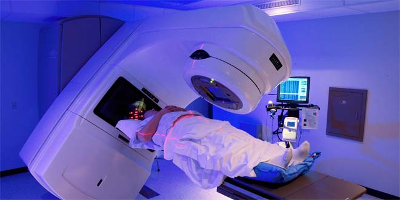

Medical
Nuclear medicine and radiology are the whole of medical techniques that involve radiation or radioactivity to diagnose, treat and prevent disease. While radiology has been used for close to a century, “nuclear medicine” began approximately 50 years ago. Today, about one-third of all procedures used in modern hospitals involve radiation or radioactivity. These procedures are among the best and most effective life-saving tools available, they are safe and painless and don’t require anesthesia, and they are helpful to a broad span of medical specialties, from pediatrics to cardiology to psychiatry.
Personal health improves with radiation.
- It allows for quick, safe, early, and more accurate medical diagnoses.
- It can be harnessed as a treatment for certain diseases.
- Tens of millions of patients are treated with nuclear medicine each year and more than 10,000 hospitals worldwide use radioisotopes in medicine.
- Employment of nuclear medicine technologists is projected to grow 10 percent from 2016 to 2026, faster than the average for all occupations.
Diagnosis
Diagnostic techniques in nuclear medicine use radiopharmaceuticals (or radiotracers) which emit gamma rays from within the body. These tracers are generally short-lived isotopes linked to chemical compounds which permit specific physiological processes to be scrutinised.
Dependent on the type of examination, radiotracers are either injected into the body, swallowed, or inhaled in gaseous form. The emissions from the radiotracers are detected by the imaging device, which provides pictures and molecular information. The superimposition of nuclear medicine images with computed tomography (CT) or magnetic resonance imaging (MRI) scans can provide comprehensive views to physicians to aid diagnosis.
An advantage of nuclear over X-ray techniques is that both bone and soft tissue can be imaged very successfully.
The most widely used diagnostic radioisotope is technetium-99m, with a half-life of six hours, and which gives the patient a very low radiation dose. Such isotopes are ideal for tracing many bodily processes with the minimum of discomfort for the patient. They are widely used to indicate tumours and to study the heart, lungs, liver, kidneys, blood circulation and volume, and bone structure.
Therapy
Nuclear medicine is also used for therapeutic purposes. Most commonly, radioactive iodine (I-131) is used in small amounts to treat cancer and other conditions affecting the thyroid gland.
The uses of radioisotopes in therapy are comparatively few, but important. Cancerous growths are sensitive to damage by radiation, which may be external (using a gamma beam from a cobalt-60 source), or internal (using a small gamma or beta radiation source). Short-range radiotherapy is known as brachytherapy, and this is becoming the main means of treatment. Many therapeutic procedures are palliative, usually to relieve pain.
A new field is targeted alpha therapy (TAT), especially for the control of dispersed cancers. The short range of very energetic alpha emissions in tissue means that a large fraction of that radiative energy goes into the targeted cancer cells once a carrier, such as a monoclonal antibody, has taken the alpha-emitting radionuclide to exactly the right places.

Isotopes used in medicine
Many radioisotopes are made in nuclear reactors, some in cyclotrons. Generally neutron-rich ones and those resulting from nuclear fission need to be made in reactors; neutron-depleted ones are made in cyclotrons. There are about 40 activation product radioisotopes and five fission product ones made in reactors.